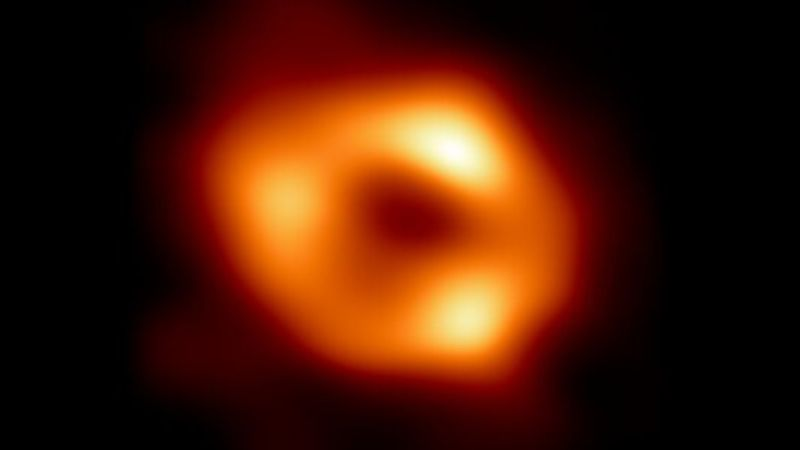
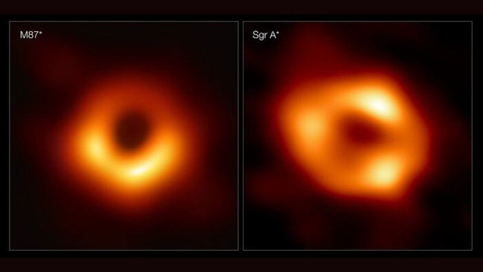

A primeira imagem do buraco negro no centro da nossa galáxia divulgada por astrônomos
O dia 10 de abril de 2019, foi um momento histórico para a ciência. Porque pela primeira vez, foi possível tira uma foto de um buraco negro 🔗. E no dia 12 de maio de 2022, foi anunciado mais outra foto de um buraco negro mais próximo, que está no centro da nossa galaxia. O buraco negro Sagittarius A* (Sagittarius A estrela).
Sagittarius A*
Em um artigo publicado em 31 de outubro de 2018, astrônomos detectaram aglomerados de gás se movendo a cerca de 30% da velocidade da luz, eram evidências conclusivas de que Sagittarius A* é um buraco negro.
No dia 12 de maio de 2022, uma equipe de astrônomos do programa Event Horizon Telescope 🔗 (EHT), divulgou um conjunto de imagens do burago negro Sagittarius A*. Foi necessário usar 8 telescópios para formar uma rede global de radiotelescópios. A primeira imagem havia sido divulgada em 2019, com o buraco negro da galáxia M87.
O buraco negro no centro da Via-Láctea está a uma distância de 26 mil anos-lus, possui um diâmetro de 44.000.000 km e estima-se em cerca de que a massa e de 4,31 milhões de massas solares.
Porque fotografo o M87 primeiro
Para captar uma imagem de um buraco negro é necessário que o buraco negro deve ser muito grande e não tenha obstáculos na frente do buraco negro.
O buraco negro M87* foi mais fácil porque ele é grande e não tem obstáculos que atrapalham a observação.
Já o Sagittarius A* foi muito difícil porque tem muitos obstáculos na frente que atrapalham a observação e ele é pequeno visto aqui da terra. Agora imagine um donut na lua visto aqui da terra, é impossível ver esse donut a olho nu, mas com a rede de telescópios espalhados pelo mundo, as coisas ficam muito fáceis.
Event Horizon Telescope
O projeto Event Horizon Telescope (EHT) é um grande conjunto de telescópios que consiste em uma rede global de radiotelescópios.
O EHT envolve mais de 300 pesquisadores da África, América do Norte e do Sul, Ásia e Europa, tem como o objetivo de captar as imagens mais detalhadas já obtidas de buracos negros.